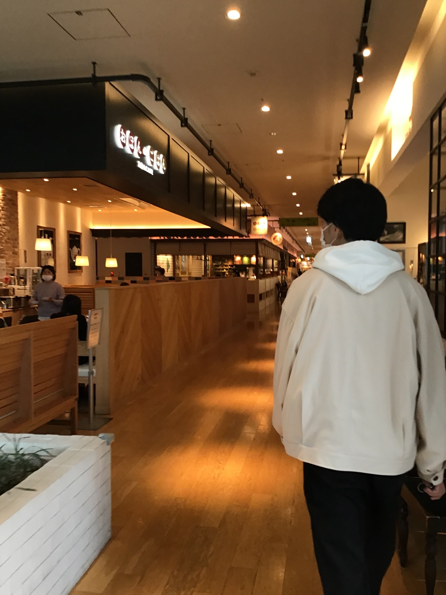
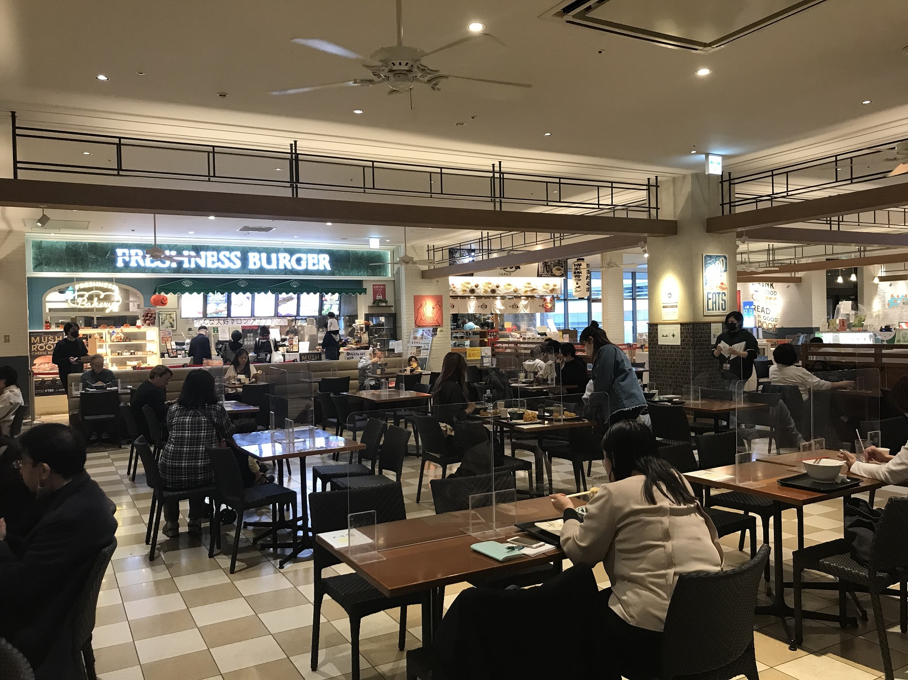
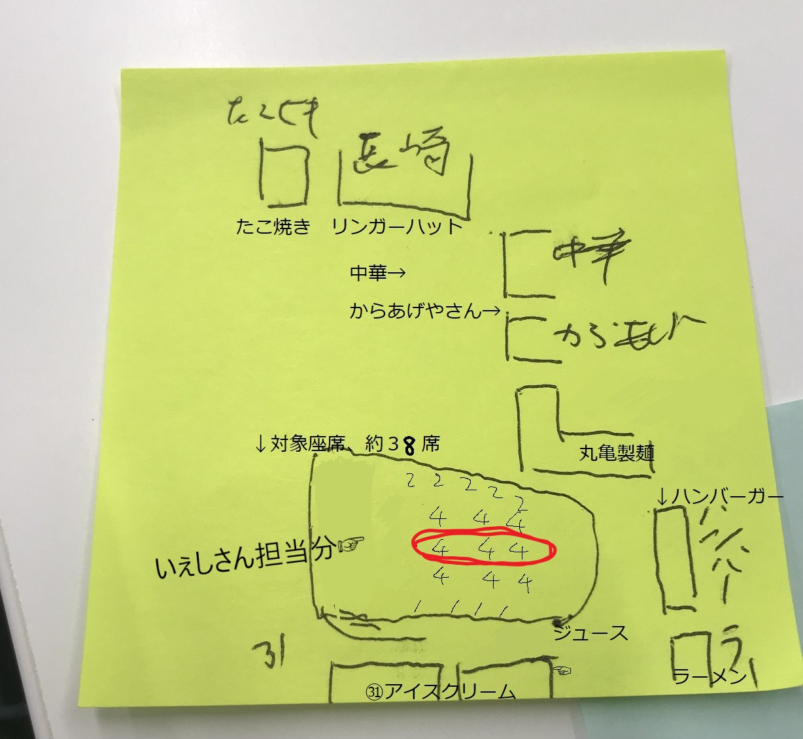
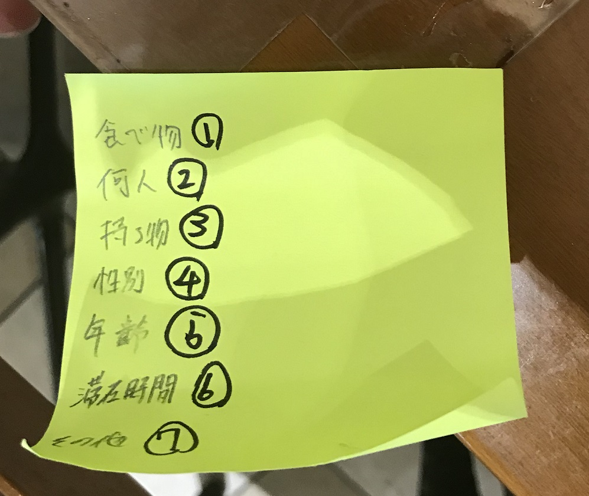

デザイン演習第４回。
フィールドワーク、調査結果。
＜調査目的＞ 人の行動内容を衣食住から分析する。
＜調査内容＞ mark is のハンバーグ屋さんで入店、以降入ってくるお客さんの滞在時間、頼んだものをチェックする。
→時間の兼ね合いの為、複数の店舗がある mark is のフードコートで観察。
フードコートの様子。

①調査場所

②調査項目
対象座席は３８席。その座席にどれくらい滞在したのか。何を食べていたのかを調査。

③具体的な項目は以下の通り。

どんな年齢層のグループが、どのくらいの時間で何を食べたのか、を１４時５０分～１５時４０分まで調査した。
結果。。。
私の担当した四人席(②の画像の赤まるで囲んだ部分）では、トータル１０人ほどが着席し、うち８人がうどんを食べていた。
丸亀製麺をたべる２０代～３０代の単身の人が多く、手ぶらな人が多かった。
☞おそらく時間帯的に手短に食べたいという心理が働いたのであろうと思われる。
平均して１０分程度の滞在時間であった。
発表のときにも先生から指摘されたが、この時間帯の食の調査はなかなか苦戦が想定されたが、
相応の傾向をつかむことができたので、やりがいがあった。